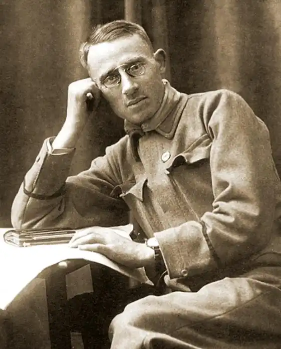

Народився 31 серпня 1883 р. в м. Бучач. Тут вчився у гімназії. Згодом студіював право у Львівському та Віденському університетах. Його покликанням зі студентських років стала політика, водночас він шліфував публіцистичну майстерність. Результатом стала видана ще до 1914 р. низка брошур на політичні теми.
Після вибуху Першої світової війни О. Назарук тісно пов’язав свою долю з Українськими Січовими Стрільцями і став їхнім літописцем. Був одним із організаторів "Пресової кватири" УСС.
1916 р. у Львові вийшла праця О. Назарука "Слідами Українських Січових Стрільців", а у Відні побачила світ його ж книжка "Над Золотою Липою". Донині ці видання залишаються одними з найважливіших і найавторитетніших джерел вивчення історії УСС. Того ж 1916 р. у Львові вийшла ще одна книжка — "З крівавого шляху Українських Січових Стрільців", до якої був безпосередньо причетний Осип Назарук. У цю "ілюстровану збірку оповідань і описів" він вклав багато праці як автор, редактор і упорядник. А роком раніше О. Назарук видав у Відні "Співанки УСС". Письменника постійно вабила історична тематика. Його погляд зупинився зокрема на двох яскравих постатях минулого — князя Ярослава Осмомисла та знаменитої Роксолани, а також помандрував у часи монгольських набігів. Першою вийшла до читачів у 1918 р. "українська повість з 12-го століття у двох частинах" — "Князь Ярослав Осмомисл". Товариство "Просвіта" нагородило цей твір престижною "Михайловою премією". Літературні критики відгукнулися на книгу О. Назарука по-різному. Полеміка між ними не припинялася кілька років. А читачі тим часом дуже активно розкуповували повість, її почали вивчати у школах. У цей період О. Назарук написав ще дві повісті — "Проти орд Чінгісхана" і "Роксолана", однак видати їх не вдалося: на заваді став буревій політичних і воєнних подій, що охопив Україну. 30 грудня 1918 р. було утворене Управління преси та інформації УНР, очолити яке довірили О. Назарукові. Після повернення до Галичини у 1919 р. він керував Прес-кватирою Української Галицької Армії. Згодом із урядом ЗУНР емігрував до Відня, де видав свій "Конспект споминів з української революції" під назвою "Рік на Великій Україні". В цій об’ємній книзі детально описував події від 5 листопада 1918 р. до 16 листопада 1919 р. Серед дійових осіб спогадів — В. Винниченко, С. Петлюра, інші історичні постаті. 1971 р. побачила світ і двотомна повість "Проти орд Чінгісхана". Влітку 1922 р. О. Назарук виїхав з Відня до Канади і змушений був залишитися за океаном. У Канаді став відомий як співорганізатор гетьманського руху, а в США, куди переїхав у листопаді 1923 р., одна за одною видав свої книжки і брошури: "Тома Томашевський — піонер української преси в Америці", "Іван Данильчук — найбільший український гуморист в Канаді", "На спокійнім океані", "Організаційний Отченаш", "В лісах Альберти і Скалистих горах", "В найбільшім парку Скалистих гір" та інші. Повернувшись до Львова, Осип Назарук у 1928 р. почав редагувати газету "Нова зоря" —католицький часопис. Виступав тут з публіцистичними статтями, кращі з них видавав брошурами. У 1930 р. побачила світ його доопрацьована протягом 1923 — 1929 рр. "історична повість з 16 століття" під назвою "Роксоляна. Жінка халіфа й падишаха Сулеймана Великого, завойовника і законодавця". Також у Львові у різних видавництвах вийшли "Вчасна війна в північній Альберті", "Греко-католицька церква і українська ліберальна інтелігенція" (обидві — 1929), "Галицька делегація в Ризі. 1920. Спомин учасника" (1930), "Вибір звання", "Венеція", "Катедра св. Марка", "Галичина і Велика Україна", "Гоги і магоги" (усі — 1934), "Ромаятерна. Вічний Рим — апостольська столиця" (1937), "Вражіння з Волині", "В Будапешті" (обидві — 1938), "Замах на церкву", "Значіння партій" (обидві — 1939) та інші. Статті О. Назарука публікували львівські часописи "Діло", "Українське слово", "Свобода", "Поступ", "Шляхи"… У пресі він активно співробітничав майже до останніх своїх днів. Помер Осип Назарук 31 березня 1940 р. в Кракові, куди виїхав перед вступом радянських військ до Львова. Чимало з того, що він написав, залишилося в рукописах… Але й твори, що побачили світ, чекала сумна доля. Після так званого "визволення" 1939 р. книги письменника були вилучені з бібліотек і зараховані до категорії націоналістичних. Ім’я О. Назарука зникло з літератури. Нині письменник і його твори повертаються до читача.